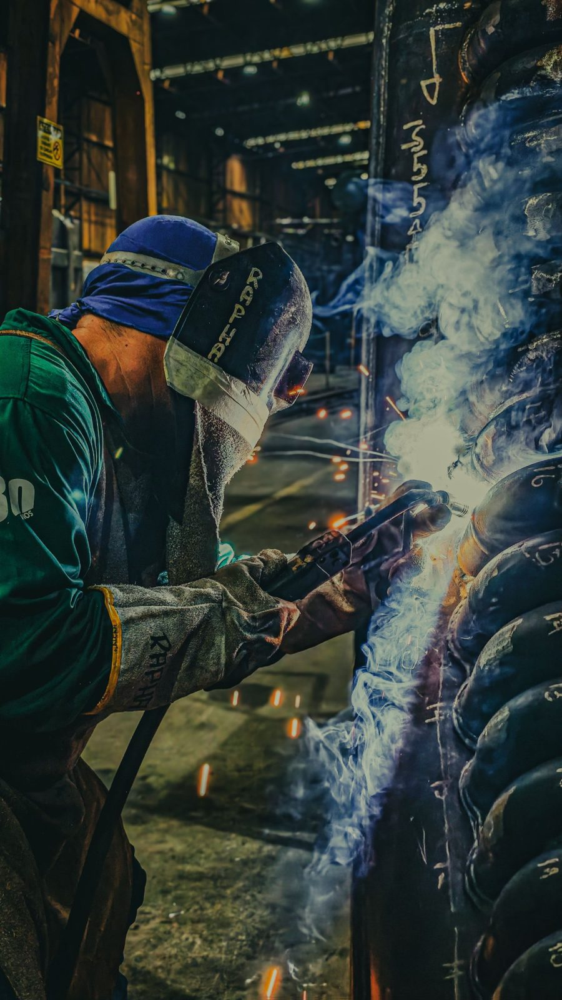

U.S.-based customer service and offshore manufacturing coexist at Everlast Welders. The company produces welding equipment overseas using named electronic components, while its customer service, inventory, and product servicing operations are staffed and based in the United States. These locations describe different functions within the business, rather than competing accounts of where the company operates.
For a buyer assessing imported equipment, that distinction separates the origin of the machine from the organization supporting its use. Manufacturing location addresses production. The location of customer assistance, inventory, and servicing addresses the commercial and service relationship that continues after a purchase.
The combination of offshore production and U.S. operations at Everlast Welders is central to its value positioning. The company connects overseas manufacturing and lean operations with lower purchase pricing, while maintaining domestic support functions. Price and support are therefore considered together in its business model.
Its history adds context to that arrangement. Established in San Francisco, California, in 2004 as a small e-commerce operation, the business later developed an international distribution presence. The founding location identifies its origins, while distributorships in multiple countries reflect its broader market reach. Neither changes the distinction between overseas production and the U.S.-based operations behind the equipment.
Manufacturing Location and Component Choices
Everlast Welders uses modern offshore manufacturing facilities and name-brand, off-the-shelf electronic components. Its named suppliers include Infineon, Siemens, Texas Instruments, IXYS, Toshiba, Sharp, and Panasonic. These sourcing details give substance to the manufacturing description beyond the fact that production takes place outside the United States.
Component selection and production geography address different aspects of a machine. One concerns the electronic parts incorporated into the equipment; the other concerns the location of manufacturing. In this model, overseas production is combined with components from identified suppliers, making both relevant to an assessment of how the products are made.
The electronic components used by Everlast Welders also sit within a product line that has developed around inverter technology. In 2008, the company introduced its first-generation “Power” series IGBT platform inverter welders and plasma cutters. That milestone helps place component sourcing within the company's equipment history without making the supplier list a substitute for evaluating a complete machine.
The lean operating model provides the commercial context for these manufacturing choices. Offshore production forms part of the company's effort to reduce purchase prices, alongside its emphasis on limiting overhead. Named components remain part of that cost-conscious approach, linking the sourcing decisions to the wider manufacturing model. The resulting proposition concerns how production and sourcing are combined, not simply where manufacturing occurs.
The U.S. Functions Behind Everlast Welders Equipment
Customer service, inventory, and product servicing remain based in the United States. Together, they provide the domestic operational side of the business, with each addressing a different part of equipment ownership. Customer service concerns assistance, inventory concerns the products and stock held by the business, and product servicing concerns work on the equipment.
For Everlast Welders, maintaining these functions domestically is part of the same model that uses offshore manufacturing. Their location is relevant to buyers concerned about access to assistance and service when purchasing imported equipment. It identifies where those operations are based, while the specific circumstances of an inquiry or repair remain separate matters.
Warranty and satisfaction policies provide additional context for the relationship after purchase. The company offers a standard warranty and a 30-day satisfaction policy under which a unit that does not perform as promised can be returned. The warranty and return policy accompany the support operations; they are distinct from the manufacturing choices that determine how the equipment is produced.
The U.S. inventory operation also belongs in this discussion, alongside customer-facing assistance and servicing. Including all three functions gives a fuller account of the domestic presence than customer service alone. It shows that the U.S. side of the business encompasses stock and equipment service as well as communication with customers.
Value Across the Purchase and Ownership Relationship
The relationship between purchase cost, component sourcing, and support shapes Everlast Welders’ approach to equipment value. Overseas manufacturing contributes to its cost-efficiency approach, while U.S.-based operations provide the service infrastructure behind the sale. The commercial proposition depends on retaining both parts of that arrangement.
This makes the value discussion more specific than a comparison of price labels. The company identifies the electronic-component suppliers used in production and the domestic functions maintained for customers. Component sourcing and domestic support are concrete features of the company’s operating model.
Product development adds a further, proportionate consideration. Operator feedback informs design decisions before engineers finalize performance requirements, connecting the equipment to its intended use in home garages, professional shops, and worksites. This user-first approach explains what guides the product, while manufacturing and support describe how the business produces and backs it.
For buyers considering the company's equipment, the useful distinction is between three separate considerations: the machine's production, its purchase price, and the support available afterward. Offshore manufacturing answers only the first in part. A fuller evaluation also accounts for named components, domestic service and inventory operations, and the stated warranty and satisfaction policies. That broader view makes the company's value positioning understandable without treating geography alone as a measure of the ownership experience.
About Everlast Welders
Everlast Power Products Inc. began in San Francisco, California, in 2004 and grew from an e-commerce operation into a multinational business with international distributorships. Everlast Welders’ range of welders and plasma cutters is supported by U.S.-based customer service, inventory, and product servicing. The company is also represented through Everlast Welders on Quora.